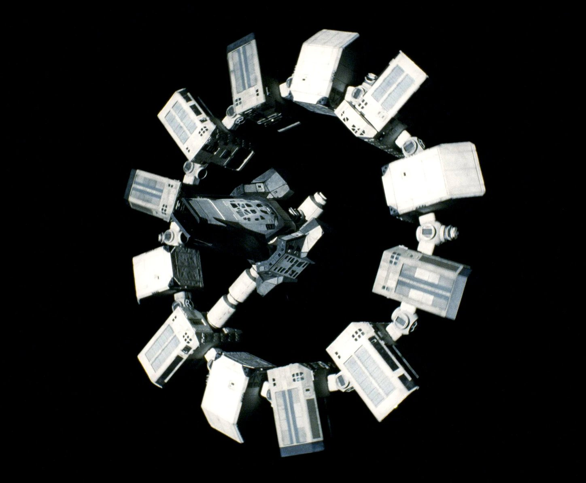

Hey, I'm Santosh Sri Manvik
I'm 18, from VIJAYAWADA

I enjoy building things

Succession (Main Title Theme)
Nicholas Britell
A Few Achievements:
Yet to achieve (work in progress)
Some Things I'm Working On:
Tech — exploring different technologies and A.I
Finance — exploring financial markets and instruments
Full stack development — building end-to-end applications
Quantitative Finance — mathematical models for financial analysis
About Me:
I am a Computer Science student specializing in Artificial Intelligence and Machine Learning. I'm passionate about building intelligent systems, exploring data-driven solutions, and continuously learning new technologies.
My Influences:
I'm a fan of Naval Ravikanth and I deeply value high-agency thinking.
He taught me about wealth creation and decision-making. David Goggins inspired me about toughness, overcoming limits and building an unbreakable mindset.
My Philosophy:
Be OBSESSED.